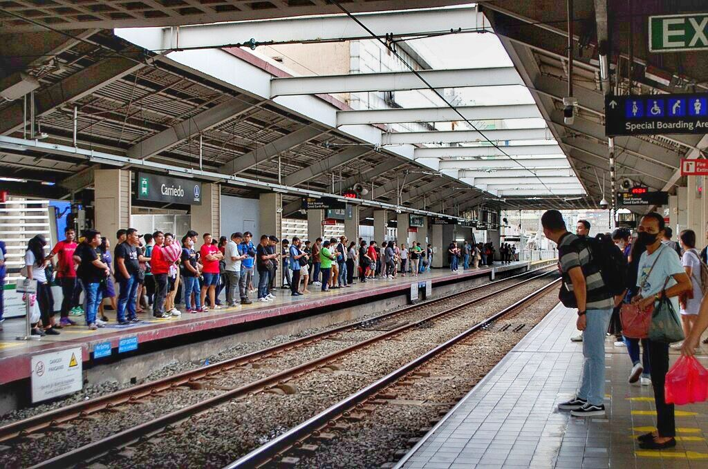
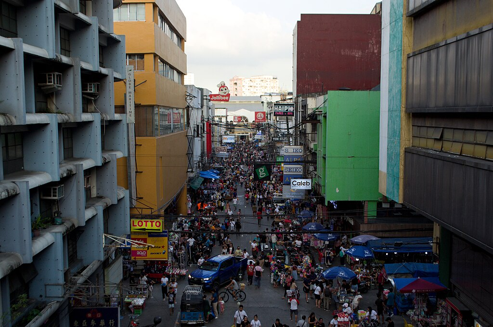
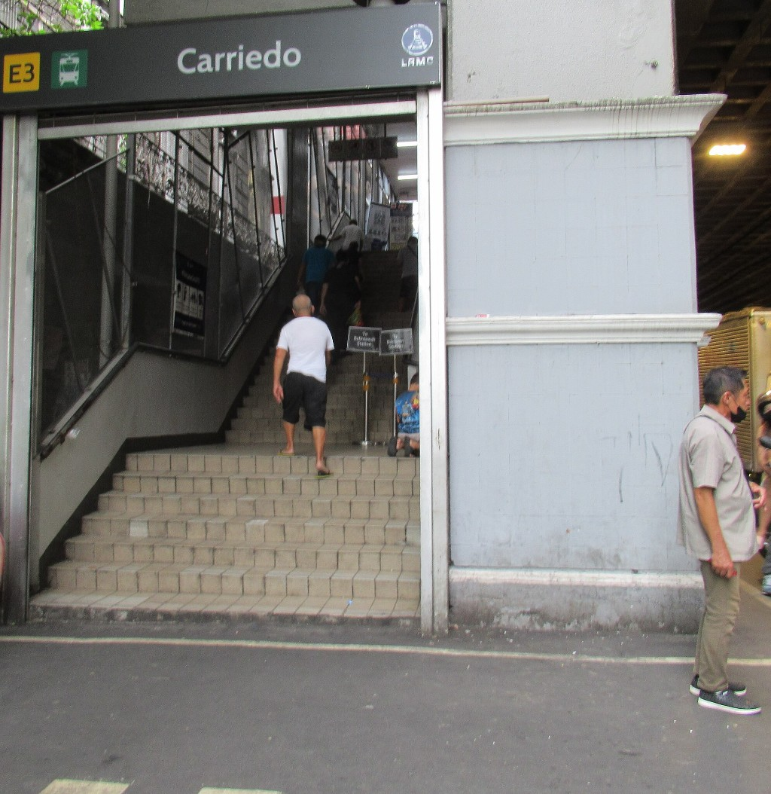

Carriedo
LRT-1 station
Carriedo station is an elevated Light Rail Transit (LRT) station located on the LRT Line 1 (LRT-1) system along the district boundary of Santa Cruz and Quiapo in Manila City.
Carriedo is the 1st station north of the Pasig River. It is the 15th station for trains headed to Fernando Poe Jr. and the 11th station for trains headed to Dr. Santos. It is named after Carriedo Street, which crosses beneath it and is itself named after Spanish philanthropist Francisco Carriedo y Pedero.
It is one of the 10 stations on the line to have its concourse area below the platform, the other nine being Dr. Santos, Ninoy Aquino, Asia World, MIA, Redemptorist, Baclaran, Central Terminal, Balintawak, and Fernando Poe Jr.
Carriedo is the 1st station north of the Pasig River. It is the 15th station for trains headed to Fernando Poe Jr. and the 11th station for trains headed to Dr. Santos. It is named after Carriedo Street, which crosses beneath it and is itself named after Spanish philanthropist Francisco Carriedo y Pedero.
It is one of the 10 stations on the line to have its concourse area below the platform, the other nine being Dr. Santos, Ninoy Aquino, Asia World, MIA, Redemptorist, Baclaran, Central Terminal, Balintawak, and Fernando Poe Jr.
| Carriedo | |||||||
|---|---|---|---|---|---|---|---|
|  | |||||||
| General information | |||||||
| Location | Rizal Avenue, Quiapo and Santa Cruz, Manila, Metro Manila, Philippines | ||||||
| Owned by |
|
||||||
| Operated by | Light Rail Manila Corporation | ||||||
| Line(s) | LRT Line 1 | ||||||
| Platforms | 2 (2 side) | ||||||
| Tracks | 2 | ||||||
| Connections | None | ||||||
| Construction | |||||||
| Structure type | Elevated | ||||||
| Parking | No | ||||||
| Bicycle facilities | No | ||||||
| Accessible |
Concourse: All entrances
Platforms: All platforms |
||||||
| Other information | |||||||
| Status | Operational | ||||||
| Station code | CA | ||||||
| History | |||||||
| Opened | May 12, 1985 | ||||||
| Services | |||||||
|
|||||||
Carriedo station was opened on April 14, 1985, when LRT's passenger service was extended from its previous route between Central Terminal and Baclaran. It became the line's northern terminus, succeeding Arroceros, until Rizal Line was opened on May 12, 1985, to extend the line further north to Monumento.
Due to Carriedo station's location being near three districts, namely, Santa Cruz, Binondo, and Quiapo, the station is served by many forms of public transport. Buses serving the Taft Avenue and Rizal Avenue routes and nearby routes, jeepneys, taxis, tricycles, and kalesas stop at and around the station. Kalesas and tricycles are particularly used in Binondo, due to the district's narrow streets.

Carriedo Street as seen from the east platform of the station
Near the station are historic landmarks such as Santa Cruz Church, Quiapo Church, and the historic Escolta Street. It is also the most accessible stop to the oldest Chinatown in the world, Binondo. The station is directly connected to Good Earth Plaza and Isetann Carriedo shopping centers via walkway. It is located near various retailers including SM Quiapo and Plaza Fair, as well as institutions such as FEATI University and Universidad de Manila Henry Sy Sr. Campus.

East entrance
Carriedo station is a three-level structure with two separate concourse areas, both on the second level: the south concourse, which connects to Isetann Carriedo and provides access via the south entrance on Carriedo Street, and the north concourse, which connects to Good Earth Plaza and provides access via the east and west entrances on Rizal Avenue. The ground (street) level houses entrances and retail shops, while carts and ATM are also found on the second level. The third level is dedicated to the side platforms.
It is also the only station on the entire line with a canopy roof with the others being fully-roofed. Like Balintawak, Central Terminal, Fernando Poe Jr., Doroteo Jose, and PITX stations, commuters do not have to go down to street level to cross from one platform to another. Unlike at Doroteo Jose, commuters do not pay another fare as well, as they transfer between platforms through the concourse.

A 1100 class train in the station
| Operational | |
|---|---|
|
Dr. Santos
Ninoy Aquino Asia World MIA Redemptorist Baclaran EDSA Libertad Gil Puyat Vito Cruz Quirino Pedro Gil |
United Nations
Central Carriedo Doroteo Jose Bambang Tayuman Blumentritt Abad Santos R. Papa 5th Avenue Monumento Balintawak |
| Fernando Poe Jr. | |
| Under construction | |
|
Las Piñas
Zapote |
Niog
North Triangle |